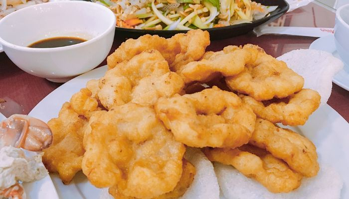
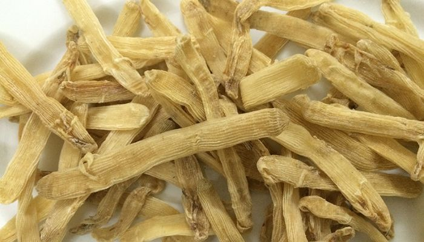
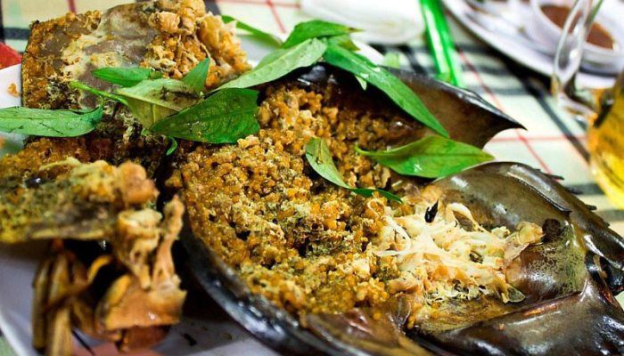
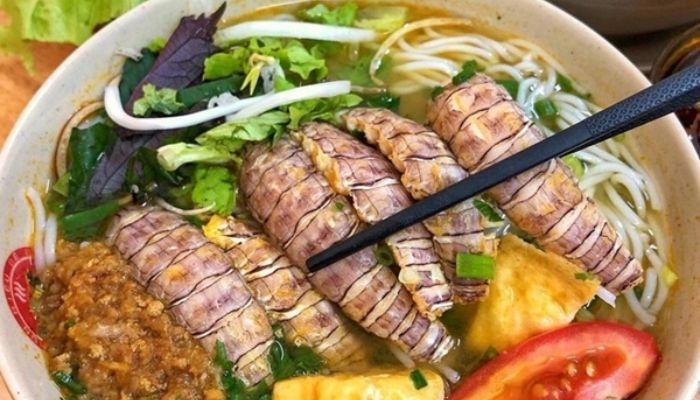
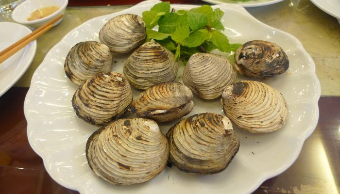
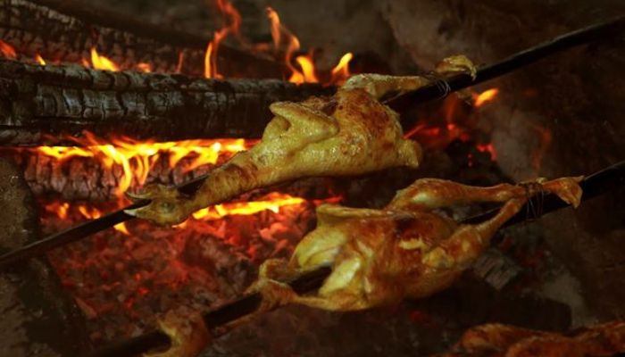
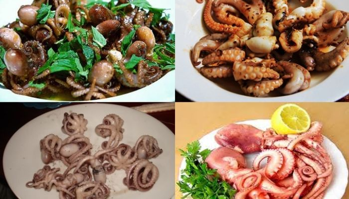
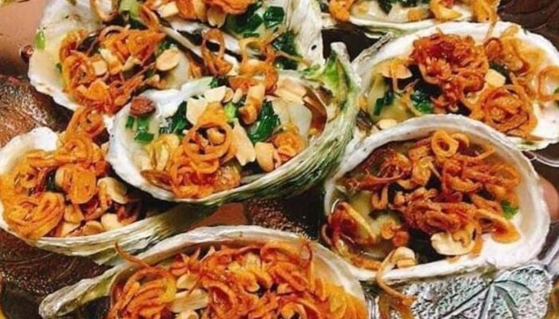
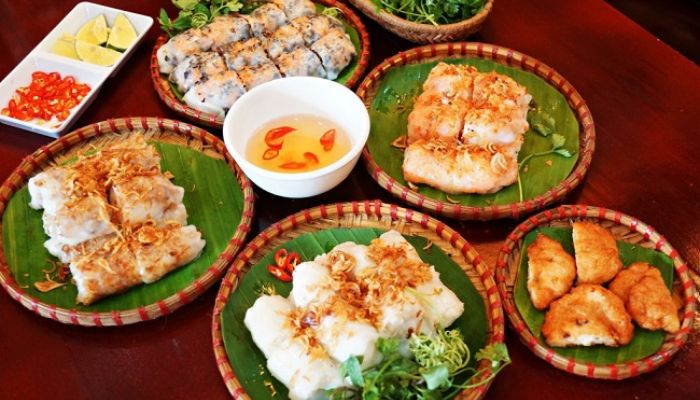

Nhắc tới Hạ Long, ai cũng nghĩ ngay rằng đây là một địa điểm du lịch vô cùng nổi tiếng ở Việt Nam với hàng nghìn hòn đảo kỳ vĩ và phong cảnh thiên nhiên tuyệt đẹp. Thế nhưng bạn đã bao giờ tò mò mình sẽ ăn gì khi đến Hạ Long chưa?
Chả mực giã tay – món đặc sản Hạ Long nổi tiếng nhất
Mức giá trung bình: 330.000 vnđ – 470.00 vnđ/kg (mỗi kg khoảng 30 – 32 miếng chả mực)
Chả mực tưởng chừng là món ăn đơn giản đâu đâu cũng làm được lại trở thành món đặc sản Hạ Long rất nổi tiếng, là bởi vì mực ở đây có vị ngọt hơn và được người thợ “giã tay” rất công phu. Thưởng thức chả mực bạn sẽ cảm nhận được vị đậm đà, độ giòn dai sần sật của mực trong từng miếng chả.

Chả mực tất nhiên được làm từ mực, nhưng ĐẶC BIỆT chả mực Ông Ba Hạ Long được làm từ thân con mực nang, đánh bắt dọc bờ biển Hạ Long, Quảng Ninh. Sơ chế qua bằng chính nước biển Hạ Long, mang đến hương vị đặc trưng mà chỉ có chả mực Hạ Long, Quảng Ninh mới có.
Sá sùng – món đặc sản Hạ Long ngon nhất
Sá sùng là món ăn khá đắt đỏ của ẩm thực Hạ Long, sở dĩ là do sá sùng rất hiếm chỉ có ở đảo Quan Lạn – Minh Châu (Vân Đồn, Quảng Ninh), mỗi kg sá sùng có giá khoảng 4 triệu. Sá sùng tươi xào tỏi là món ăn đặc sản ở Hạ Long, hay sá sùng rang chấm với tương ớt ăn kèm với rau diếp cá, uống bia cũng rất hấp dân, người dân Hạ Long thường phơi khô sá sùng rồi đem rang cho chín vàng có mùi thơm hấp dẫn.

Sam biển – món ăn ngon Hạ Long nên thử
Ăn gì ở Hạ Long? Chắc hẳn bạn không thể bỏ qua món sam biển rồi. Các món ăn từ sam biển rất đa dạng, có hể chế biến thành nhiều món ăn ngon như: gỏi sam, chân sam xào chua ngọt, sam xào xả ớt hay sam hấp…Thịt sam biển rất ngon, thơm và dai nếu có cơ hội tới Hạ Long bặn nên thưởng thức đặc sản này để cảm nhận được hết hương vị riêng biệt của món ăn ven biển.

Bún bề bề – món ăn ngon ở Hạ Long giá rẻ
Nếu nghĩ du lịch Hạ Long chỉ toàn là những món đặc sản Hạ Long đắt đỏ thì có lẽ bạn đã nhầm, bởi vùng đất này cũng rất đa dạng ẩm thực và không thiếu những món ăn bình dân, trong đó phải kể đến món bề bề.
Bề bề hay còn gọi tôm tít, có ở rất nhiều nơi, nhưng bún bề bề ở Hạ Long có hương vị rất đặc trưng, thịt bề bề ngọt thơm, ăn không hề cảm nhận được vị tanh, chính vì vậy nên bún bề bề đã được xếp vào trong danh sách những món ăn ngon Hạ Long nên thử hiện nay.

Món ngán Hạ Long
Gọi là ngán nhưng món ăn này lại k ngán chút nào, là một đặc sản của vùng đất ven biển. Con ngán có hình dạng giống với con ngao, ngán được chế biến thành nhiều món ăn ngon khác nhau như ngán hấp, nướng, xào hay nấu cháo, đặc biệt rượu ngán với hương vị cay cay, thơm nồng khi thưởng thức ai cũng phải trầm trò khen ngợi. Nếu bạn muốn mua ngán về lằm quà hãy tới khu vực chợ Cái Răm, Vườn Đào có bán rất nhiều ngán tươi và rượu ngán.

Gà Lôi Âm – món gà nướng Hạ Long ngon có tiếng
Ở khu vực gần chân núi Lôi Âm, Hạ Long có rất nhiều quán gà nướng, và người ta gọi là gà Lôi Âm. Món đặc sản Hạ Long này được rất nhiều du khách yêu thích, họ thường ghé đến đây thưởng thức mỗi khi du lịch Hạ Long, có khi còn mua về làm quà biếu cho người nhà, đủ để thấy gà lôi âm hấp dẫn thế nào rồi đấy.

Điểm đặc trưng của món gà Lôi Âm là nó chỉ được nướng khi bạn bắt đầu order đồ, nên thịt gà lúc nào cũng tươi ngon. Lúc gà chín các mặt vàng đều, ăn giòn, không bị ngấy, nếu chấm với muối tiêu chanh thì hết ý. Bạn có thể ghé ăn gà Lôi Âm ở quán nào dưới chân núi cũng được (300k – 350k/con), ví dụ: quán Đậm Đà, quán Phương Chuyên, quán Thành Lộc Hạnh…
Ruốc lỗ – Món hải sản Hạ Long độc đáo nhất
Đi Hạ Long nên ăn gì? Ruốc lỗ là món ăn ngon ở Hạ Long không được nhiều biết đến, nhưng hương vị của nó sẽ khiến bạn muốn thưởng thức nhiều lần. Con ruốc lỗ này còn có tên khác là ruốc chân dài, có cùng họ với loài bạch tuộc nhưng chân của nó có thể dài tới trên dưới 20cm. Ruốc lỗ thường có size nhỏ, mỗi con chỉ có cân nặng trên dưới 100g thôi nhưng chính vì vậy mà ruốc lỗ chế biến xong ăn rất là giòn ngọt. Khoảng tháng 7 – 10 âm lịch hàng năm là mùa thu hoạch ruốc lỗ nhiều nhất tại vùng biển Quảng Ninh nên giá thành sẽ giảm đi đôi chút, 1kg ruốc lỗ sẽ rơi vào khoảng 400k – 600k.

Hàu nướng – món ngon Hạ Long được yêu thích
Hạ Long có đặc sản gì? Chỉ cần đi dạo quanh cách con phố, khu chợ đêm Hạ Long bạn sẽ thấy rất nhiều quầy hàu nướng được bán với giá rất phải chăng. Hàu ở Hạ Long được đánh bắt trực tiếp rồi chế biến nên lúc nào cũng tươi và ngon, múp thịt. Chính vì vậy hàu hiện nay đang trở thành một trong những món ngon Hạ Long được yêu thích.

Hàu nướng ở Hạ Long dao động từ 10.000 – 50.000 con, tùy nhà hàng, tùy mùa nữa. Bạn có thể tìm đến các quán ven đường hay những quán ăn ở khu lấn biển cột 3 – 5, nhà bé hoặc Bến Đoan để thưởng thức món đặc sản Hạ Long này.
Bánh cuốn chả mực Hạ Long
Không chỉ nổi tiếng với xôi chả mực, tới Hạ Long bạn sẽ được thưởng thức bánh cuốn chả mực tuyệt ngon. Với những chiếc bánh cuốn được tráng mỏng với thịt bằm, nấm, mộc nhĩ bên trong ăn kèm với chả mực, rau mùi, nước chấm là sự kết hợp tuyệt với làm nên món ăn đậm hương vị biển vô cùng hấp dẫn. Để thưởng thức món bánh cuốn chả mực các bạn có thể tới quán bánh cuốn chả mực bà Ngân phố Cây Tháp, Hồng Gai, thành phố Hạ Long hoặc quá cạnh rạp Bạch Đằng, Thành phố Hạ Long là hai quán bánh cuốn chả mực ngon nhất.

Sữa chua trân châu Hạ Long
Ăn gì ở Hạ Long? Có lẽ thương hiệu sữa chua trân châu Hạ Long không còn xa lạ gì với nhiều người nữa, bởi ở các tỉnh thành khác đều có rất nhiều cơ sở mọc lên, nhưng bạn có biết cơ sở đâu tiên, cơ sở 00 chính là ở Hạ Long không?

Từng cốc sữa chua thơm ngon, dẻo mịn, thơm mát, được làm 100% từ những công thức của người dân Hạ Long, béo ngậy nước cốt dừa, ăn kèm với nó là những topping đa dạng như thạch, chuối khô, trân châu, trà xanh… sẽ khiến bạn không thể cưỡng lại được. Sữa chua trân châu Hạ Long xứng đáng là món ăn vặt Hạ Long hấp dẫn nhất hiện nay.
Du lịch Hạ Long không chỉ chiêm ngưỡng những kì quan thiên nhiên nổi tiếng mà còn là cơ hội để thưởng thức món ăn đặc sản Hạ Long vô cùng phong phú và hấp dẫn. Những món ngon Hạ Long chính là quà tặng của biển dành cho mỗi du khách, vì vậy đừng chần chừ mà hãy lên kế hoạch để đặt chân tới khám phá Hạ Long ngay thôi nhé. Chúc bạn du lịch vui vẻ!
Nguồn : dulichhalong.com.vn